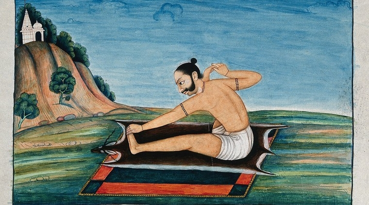

All Articles

Yoga Philosophy
What Actually Is Yoga?
Yoga is not a set of exercises. It is a complete science of the human being — a system that was developed over thousands of years to guide practitioners toward the highest states of consciousness.
Read article →

Hatha Yoga
Mudras: The Gestures of Inner Power
Mudras are specific hand and body gestures that redirect prana in the energy body. Far more than symbolic poses — they are precise tools for working with your nervous system and consciousness.
Read article →

Hatha Yoga
Hatha Yoga as a Scientific System
Hatha Yoga is not a fitness class. It is a precise scientific system for purifying the nadis, awakening prana, and preparing body and mind for higher states of meditation.
Read article →

Pranayama
Pranayama — The Bridge to the Unknown
Pranayama is not simply breathing exercises. It is the conscious management of the vital life force that animates every cell — a direct bridge between the physical and the subtle dimensions.
Read article →

Yoga Philosophy
The Five Paths of Yoga
Yoga is not a single practice — it is an entire civilisation of inner development. Karma, Jnana, Bhakti, Raja, and Hatha Yoga each offer a distinct and complete path toward liberation.
Read article →

Hatha Yoga
From Instinct to Enlightenment — Asanas as the Key to Inner Evolution
What are yoga asanas really? How they work with your energy system, chakras, and Kundalini — and why they are fundamentally different from physical exercise.
Read article →